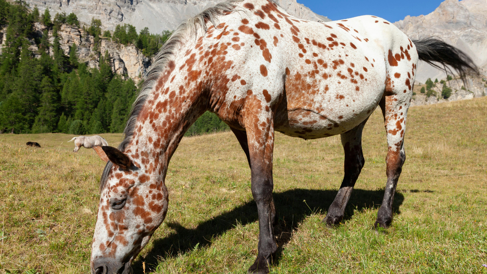

Hippodrome
Vincennes
Discipline
Trot Attelé
Distance
2700m
Corde
Gauche
Partants
15
Dotation
75 000€
Vidéo du jour : Regarder l'analyse complète sur YouTube →
| N° | Cheval | Driver | Cote |
|---|---|---|---|
| 1 | JEZABELLE BIE | Barrier A. | 99 |
| 2 | DAYAK | Rochard B. | 6 |
| 3 | IGUANE DE CAPONET | Abrivard A. | 7 |
| 4 | COLBERT WF | Ploquin P. | 16 |
| 5 | FUTUR DU CHENE | — | 40 |
| 6 | GAZ D'OCCAGNES | — | 35 |
| 7 | GINO VIVA | — | 28 |
| 8 | HOMARD LAND | Thomain D. | 15 |
| 9 | JONGLEUSE DE LUNE | — | 30 |
| 10 | HAMILTON DU HAM | Martens C. | 30 |
| 11 | IRON DU GERS | Bazire N. | 4 |
| 12 | JET EXPRESS | Abrivard M. | 4 |
| 13 | HANNAH | — | 50 |
| 14 | JE REVE DU BOIS | Barrier A. | 51 |
| 15 | GIMS DU PLESSIS | — | 60 |
Cinq deuxième places consécutives, une régularité impressionnante qui confirme sa qualité au plus haut niveau. Départ décalé à avantage, réduction kilométrique de 1'10"8 parmi les meilleures du peloton, et piloté par Matthieu Abrivard, l'un des meilleurs pilotes du moment. À la cote de 4, c'est le favori logique et la base unanime de la presse.
Hongre de huit ans préparé et piloté par Nicolas Bazire, un homme qui connaît Vincennes comme sa poche. Deux victoires récentes, régularité remarquable, réduction de 1'10"3 excellente. Un concurrent sérieux qui peut rejoindre le podium sans forcer.
Deux victoires consécutives récemment, réduction kilométrique de 1'10"1 parmi les meilleures. Départ décalé à avantage, palmarès impressionnant. Un outsider solide à la cote de 6.
Trois victoires consécutives récemment, une série qui force le respect. À la cote de 15, c'est le coup de poker de cette sélection, le genre de cheval que les amateurs de rapports recherchent.
Sélection de 8 chevaux :
121123841014
Notre favori : 12 — JET EXPRESS
2ème : 11 — IRON DU GERS
3ème : 2 — DAYAK
4ème : 3 — IGUANE DE CAPONET
5ème : 8 — HOMARD LAND
12 — 11 — 2
Chances : 12 combinaisons
12 — 11 — 2 — 3 — 8
Chances : 60 combinaisons
12 — 11 — 2 — 3 — 8 — 4 — 10 — 14
Chances : 336 combinaisons